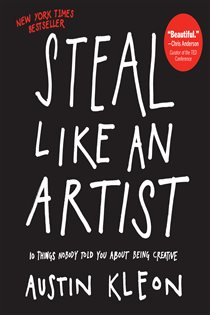

Library › Creativity
Steal Like an Artist — Summary & Key Lessons

10 things nobody told you about being creative — nothing is original, and that's your freedom.
📖 OPEN THE FULL INTERACTIVE BREAKDOWN →🌐 Read it in Hindi, Hinglish, Gujarati, Tamil & 22 more languages — free, with audio.
💡 The Big Idea
Kleon's pocket manifesto dismantles the paralyzing myth of originality: every artist gets asked where their ideas come from, and the honest ones answer 'I steal them.' Good theft honors, studies, transforms, and remixes many sources; bad theft skims, imitates one source, and rips off. From that foundation flow the ten rules: don't wait to know who you are (make things and find out), write the book you want to read, use your hands, treat side projects as the real projects, do good work and share it, remember that geography is no longer your master, be nice (the world is small), be boring (it's the only way to get work done), and embrace creative subtraction — the constraints ARE the gift.
🧠 The 5 Key Lessons
Lesson 1: Nothing Is Original — Steal With Honor
Rule 1: Steal Like an Artist
Every new idea is a mashup or remix of previous ideas — the artist's job isn't inventing from nothing (nobody does) but collecting good ideas worth stealing. The genealogy is liberating: you are the sum of your influences ('you're a mashup of what you let into your life'), so curate them deliberately — steal from many sources, and the blend becomes 'yours.' Kleon's ethics of theft: good theft honors (credits), studies (understands why it works), steals from many, transforms, and remixes; bad theft degrades (rips off), skims (copies surface), steals from one (plagiarism), and imitates without transformation. Climb your own family tree: pick one thinker you love, study everything about them, then three people THEY loved — that lineage is your school, and no admission letter is required.
📖 Example: Kleon's evidence spans the canon: the Beatles started as a cover band, studying their heroes note by note before writing a single original; Kobe Bryant openly stole every one of his moves from tapes of his idols — and discovered his own game in the… Read the full example →
⚡ Do this: Build your family tree: pick one creator you love, study their influences, then their influences' influences. Start a 'swipe file' — physical or digital — where every idea worth stealing gets captured the moment you meet it.
Lesson 2: Fake It Till You Make It — Start Copying
Rules 2–3: Don't Wait Until You Know Who You Are / Write the Book You Want to Read
The paralysis of 'finding yourself' before starting is backwards: you find out who you are BY making things — identity is a by-product of practice, not a prerequisite. So dress for the job you want, act like the artist you intend to become, and start with deliberate copying: not plagiarism (passing off) but practice (reverse-engineering) — the human version of a musician learning scales. The magic is in the failure: nobody can copy perfectly, and the gap where your copy diverges from the original — where your hand, voice, and history betray you — is precisely where your style lives. Copy your heroes until you can see what they missed, then make the thing THEY didn't: write the book you want to read, make the product you wish existed.
📖 Example: Hunter S. Thompson literally retyped 'The Great Gatsby' and 'A Farewell to Arms' on his own typewriter — to feel what writing a great novel felt like in the fingers. Conan O'Brien's formulation seals the chapter: every comedian tried to be Johnny Carson and… Read the full example →
⚡ Do this: Choose one piece by a hero — an essay, a design, a video — and copy it outright as private practice. Then annotate where your version deviates: those deviations are your style announcing itself. Finally, name the thing you wish existed. Make version one.
Lesson 3: Use Your Hands — Step Away From the Screen
Rules 4–5: Use Your Hands / Side Projects Are the Real Projects
Creative work is body work: the computer is brilliant for editing and publishing but sterile for generating — it invites premature deletion (ideas killed before they're born) while the hands, moving real materials, unlock thinking the brain can't do alone. Keep two desks: an analog desk (paper, pens, scissors, index cards — no electronics) where work is BORN, and a digital desk where it's edited and shipped. Alongside: protect your side projects and hobbies — the doodling, the second passion, the 'time-wasting' tinkering — because that's consistently where the real breakthroughs come from, and practice PRODUCTIVE procrastination: multiple projects mean stalling on one becomes progress on another. Boredom, too, is a tool: creative people need time to do nothing; the shower and the queue are where ideas ambush you.
📖 Example: Kleon's blackout poems were born of exactly this ecology: a side project of marker-and-newspaper play, done while procrastinating on 'serious' writing — which became the career. He points to the research that writing by hand engages different neural… Read the full example →
⚡ Do this: Set up the analog station this week: one surface, zero electronics, paper and markers. Start every project there for a month. And list your 'unproductive' side interests — schedule two hours for the most persistent one; it's probably load-bearing.
Lesson 4: Share Your Work & Be Nice — The World Is a Small Town
Rules 6–8: Do Good Work and Share It / Geography Is No Longer Our Master / Be Nice
The two-step career formula: do good work (wildly hard — make things, fail, get better) and share it (wildly easy — post it where people can find it). Early obscurity is an asset: with nobody watching, you can experiment freely, and sharing your process and secrets makes people care by the time the work matters. Geography is dead as a gatekeeper — build your scene online if your city lacks one, but also leave home when you can: unfamiliar surroundings force fresh sight. And practice strategic niceness: the internet is a small town where every enemy is a wasted asset ('you're only going to be as good as the people you surround yourself with'); follow the best people online, write fan letters without expecting replies, and if you must fight, channel anger into work — 'complain about the way other people make software by making software.'
📖 Example: Kleon's own arc demonstrates the loop: posting blackout poems free online (sharing), building an audience before any book existed (obscurity leveraged), and publicly crediting every influence (niceness compounding into a network of allies who promoted him… Read the full example →
⚡ Do this: Ship one piece of work publicly this week with full credit to its influences. Write one public fan letter (a post praising someone's work in detail, tagged). And audit your feeds: unfollow two energy-vampires, follow three people better than you.
Lesson 5: Be Boring, Marry Well, and Embrace Your Limits
Rules 9–10: Be Boring / Creativity Is Subtraction
The romantic artist myth — chaos, ruin, absinthe — kills more careers than it fuels: 'be regular and orderly in your life, so that you may be violent and original in your work' (Flaubert). The boring toolkit: keep your day job (it funds freedom, supplies structure and material — the schedule builds the habit of making time, not finding it), keep a calendar and log (small daily boxes ticked beat heroic binges; the logbook shows the invisible progress), stay out of debt (money problems eat art), and marry well — in every sense: your partner and closest circle determine your creative survival more than talent does. Finally, the paradox that closes the book: creativity is SUBTRACTION — nobody is paralyzed by too few options; choose your constraints (time boxes, tools, formats, word limits) and the limits will do the creating with you.
📖 Example: The canon of boringly great: Wallace Stevens (insurance executive, transcendent poet), William Carlos Williams (family doctor, revolutionary poet), Kleon himself (day-job web designer while the poems compounded nightly). And subtraction's proof is the book's… Read the full example →
⚡ Do this: Design your boring system: fixed daily creative window (even 30 minutes), a wall calendar you X every day you show up, and one chosen constraint for your current project (word cap, tool limit, deadline). Log everything; trust the boxes.
✅ 5-Step Action Plan
- Start the swipe file and build your creative family tree.
- Copy one hero's piece as practice; mine the failures for your style.
- Set up the analog desk; start everything on paper for a month.
- Ship weekly, credit loudly, write one public fan letter.
- Fix the boring system: daily window, wall calendar, one constraint.
⚠️ When This Doesn't Work
There's a line between stealing like an artist and copying like a product manager. Microsoft's Zune stole the iPod's playbook so faithfully that it inherited everything except the point — and died as a footnote. Kleon means steal ideas, influences, techniques — not the product itself. If your 'remix' is indistinguishable from the original, you haven't stolen like an artist, you've just stolen. The test: what did you add that only you could?
💀 The Graveyard Proves It
🎵 Zune — The 'iPod Killer' That Killed Microsoft's Music Business. Burn: Never profitable; market share never exceeded ~2%; discontinued. Read the full case study →
💬 Best Quotes from Steal Like an Artist
- “Every artist gets asked the question: 'Where do you get your ideas?' The honest artist answers: 'I steal them.'”
- “You are a mashup of what you let into your life.”
- “Do good work and share it with people.”
Interactive version: mark lessons as read, listen in your language, share quote cards.